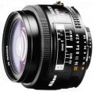

器材库 > 35mm画幅AF定焦镜头 > AF 24/2.8

详细规格
镜头类型
广角镜头
发布日期
未知
焦距
24mm
最大光圈
f/2.8
最小光圈
f/22
视角（对角）
84
镜头结构
9片/9组
光圈叶片
7片
最大放大倍率
0.112
驱动马达
AF马达
滤镜口径
52mm
镜头卡口
Nikon AF
防抖
否
颜色
黑色
尺寸
65.00x46.00mm
重量
260g
附件
遮光罩： HN-1
二手王2015-04-06 14:124.33 分
操作性 4.00耐用性 4.50性价比 4.50解像力 4.00色彩还原 4.50机械结构 4.50
fsylco2010-09-21 10:274.58 分
操作性 5.00耐用性 4.50性价比 4.50解像力 4.50色彩还原 4.50机械结构 4.50
一蓑烟雨任平生2007-09-01 22:104.83 分
操作性 5.00耐用性 5.00性价比 5.00解像力 4.50色彩还原 5.00机械结构 4.50
skoda2006-09-14 07:552.83 分
操作性 3.00耐用性 3.00性价比 3.50解像力 3.50色彩还原 3.00机械结构 1.00
走动变焦2006-09-11 08:444.75 分
操作性 4.50耐用性 5.00性价比 4.50解像力 4.50色彩还原 5.00机械结构 5.00
产品图 / 样片
外观图
评测 / 相关文章
该产品暂无存档的评测文章